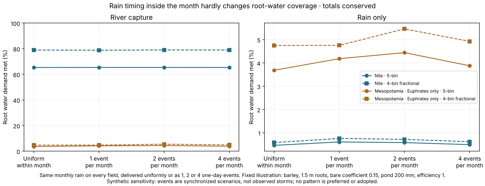

EARTH EVIDENCE · 14 NOVEMBER 2026
When rain falls inside the month hardly matters here
A declared sensitivity on the eight mapped illustrations. With every field's monthly rain conserved exactly, delivering it as one, two or four one-day events instead of uniformly changes root-water coverage by at most 0.76 percentage points. With river capture on the Nile the change is at most 0.19 points. Uniform rain is therefore not what limits these results. No pattern is preferred or adopted.
The question
The daily coupling spreads monthly rain evenly inside each month. Light daily rain can evaporate from the surface while the same amount in a storm might soak in, so uniform rain could have understated crop water. This experiment holds everything else fixed and changes only the timing.

Root transpiration actual/potential, area-weighted over crop-eligible candidate fields. It is not crop yield, irrigated area or residents.
All 32 cases
32 scenarios
| Region | Calendar | Access | Rain pattern | Root demand met | ≥95% root km² | Rain km³ | Surface evaporation km³ | Root uptake km³ | Spin-up years |
|---|
| Nile | 5-bin | Rain only | Uniform | 0.46% | 0 | 0.942 | 0.722 | 0.029 | 2 |
| Nile | 5-bin | Rain only | 1 event | 0.61% | 0 | 0.942 | 0.685 | 0.039 | 2 |
| Nile | 5-bin | Rain only | 2 events | 0.58% | 0 | 0.942 | 0.713 | 0.037 | 2 |
| Nile | 5-bin | Rain only | 4 events | 0.49% | 0 | 0.942 | 0.720 | 0.032 | 2 |
| Nile | 5-bin | River capture | Uniform | 65.31% | 0 | 0.942 | 4.283 | 4.834 | 2 |
| Nile | 5-bin | River capture | 1 event | 65.41% | 0 | 0.942 | 4.252 | 4.841 | 2 |
| Nile | 5-bin | River capture | 2 events | 65.40% | 0 | 0.942 | 4.278 | 4.840 | 2 |
| Nile | 5-bin | River capture | 4 events | 65.35% | 0 | 0.942 | 4.283 | 4.837 | 2 |
| Nile | 4-bin fractional | Rain only | Uniform | 0.58% | 0 | 0.942 | 0.723 | 0.028 | 2 |
| Nile | 4-bin fractional | Rain only | 1 event | 0.76% | 0 | 0.942 | 0.686 | 0.037 | 2 |
| Nile | 4-bin fractional | Rain only | 2 events | 0.72% | 0 | 0.942 | 0.714 | 0.035 | 2 |
| Nile | 4-bin fractional | Rain only | 4 events | 0.62% | 0 | 0.942 | 0.720 | 0.030 | 2 |
| Nile | 4-bin fractional | River capture | Uniform | 78.98% | 397 | 0.942 | 4.228 | 4.440 | 2 |
| Nile | 4-bin fractional | River capture | 1 event | 78.84% | 0 | 0.942 | 4.173 | 4.434 | 2 |
| Nile | 4-bin fractional | River capture | 2 events | 79.04% | 491 | 0.942 | 4.223 | 4.443 | 2 |
| Nile | 4-bin fractional | River capture | 4 events | 79.00% | 397 | 0.942 | 4.228 | 4.441 | 2 |
| Mesopotamia · Euphrates only | 5-bin | Rain only | Uniform | 3.69% | 0 | 8.955 | 6.479 | 0.664 | 2 |
| Mesopotamia · Euphrates only | 5-bin | Rain only | 1 event | 4.19% | 0 | 8.955 | 5.692 | 0.753 | 2 |
| Mesopotamia · Euphrates only | 5-bin | Rain only | 2 events | 4.44% | 0 | 8.955 | 6.311 | 0.801 | 2 |
| Mesopotamia · Euphrates only | 5-bin | Rain only | 4 events | 3.88% | 0 | 8.955 | 6.434 | 0.699 | 2 |
| Mesopotamia · Euphrates only | 5-bin | River capture | Uniform | 3.69% | 0 | 8.955 | 7.074 | 0.664 | 2 |
| Mesopotamia · Euphrates only | 5-bin | River capture | 1 event | 4.19% | 0 | 8.955 | 6.287 | 0.753 | 2 |
| Mesopotamia · Euphrates only | 5-bin | River capture | 2 events | 4.44% | 0 | 8.955 | 6.906 | 0.801 | 2 |
| Mesopotamia · Euphrates only | 5-bin | River capture | 4 events | 3.88% | 0 | 8.955 | 7.029 | 0.699 | 2 |
| Mesopotamia · Euphrates only | 4-bin fractional | Rain only | Uniform | 4.75% | 0 | 8.955 | 6.495 | 0.635 | 2 |
| Mesopotamia · Euphrates only | 4-bin fractional | Rain only | 1 event | 4.76% | 0 | 8.955 | 5.781 | 0.636 | 2 |
| Mesopotamia · Euphrates only | 4-bin fractional | Rain only | 2 events | 5.46% | 0 | 8.955 | 6.352 | 0.730 | 2 |
| Mesopotamia · Euphrates only | 4-bin fractional | Rain only | 4 events | 4.93% | 0 | 8.955 | 6.457 | 0.659 | 2 |
| Mesopotamia · Euphrates only | 4-bin fractional | River capture | Uniform | 4.75% | 0 | 8.955 | 7.091 | 0.635 | 2 |
| Mesopotamia · Euphrates only | 4-bin fractional | River capture | 1 event | 4.76% | 0 | 8.955 | 6.377 | 0.636 | 2 |
| Mesopotamia · Euphrates only | 4-bin fractional | River capture | 2 events | 5.46% | 0 | 8.955 | 6.947 | 0.730 | 2 |
| Mesopotamia · Euphrates only | 4-bin fractional | River capture | 4 events | 4.93% | 0 | 8.955 | 7.052 | 0.659 | 2 |
Clock control
All four patterns run on one common clock that contains every event boundary, so they differ only in rain. That clock is finer than the original one. Uniform rain on the common clock reproduces the archived original-clock coverage to within 0.021 percentage points; that difference is a step-size effect and is reported separately from rain timing.
Independent checks
Twelve preflight controls passed before any Earth output, including exact bin and field totals on arbitrary clocks and a decimal overlap reference. The review rebuilds the pulse rain from first principles, reuses the previously reviewed scalar river, pond and soil ledger, and compares 13,165,152 field-steps: eligibility, annual field stocks and fluxes, monthly basin ledgers and daily basin stocks. Largest annual field difference 1.6e-12 mm. A fresh run reproduces both numeric files byte for byte, and every protected earlier file is unchanged.
Protocol · All results/provenance · Independent review/replay · Field states/monthly ledgers (NPZ)
What this does and does not show
It removes one suspected cause: within-month rain timing does not explain the low rain-only coverage or the Nile shortfall. It does not model storm runoff or deeper infiltration from intense rain, which the plan excluded, and the events are synchronized across all fields, unlike real storms. Soil profiles, root development, crop coefficients, pond access and drainage dates remain unqualified, Mesopotamia still lacks the Tigris, and no harvest rule follows from these water diagnostics.